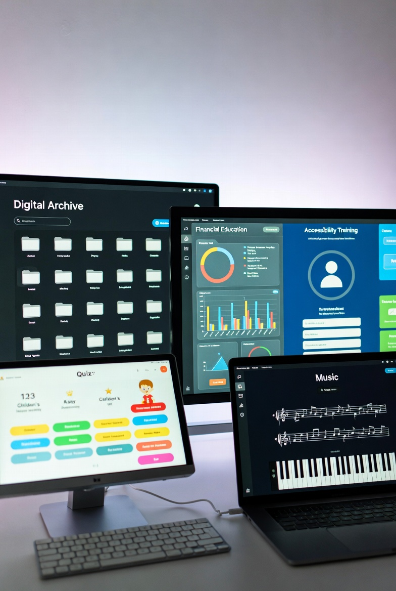

Financial Trading Simulation
Storyline 360 Level 4 Sim
Designed a complex branching "sandbox" for CIBC Investors Edge, reducing risk for novice traders.
View ProjectSpecializing in Level 4 Simulations & WCAG 2.1 Accessible Learning
Over 8 years of experience designing high-impact learning ecosystems for financial, public, and cultural institutions. Expert in Articulate Storyline 360, Adobe Creative Suite, and building fully accessible (AODA/WCAG) training solutions.
Storyline 360 Level 4 Sim
Designed a complex branching "sandbox" for CIBC Investors Edge, reducing risk for novice traders.
View Project
WCAG 2.1 AODA
Standard-setting provincial training optimized for JAWS/NVDA screen readers and keyboard navigation.
View Project
Adobe Premiere UX Design
Curated and developed a high-fidelity video training ecosystem for the Royal Conservatory of Music.
View Project
JavaScript Engagement
Interactive, youth-focused digital literacy assessments for the Toronto Public Library.
View Project